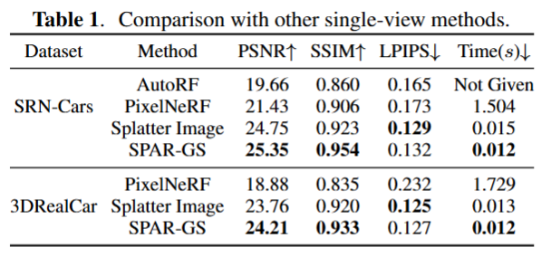
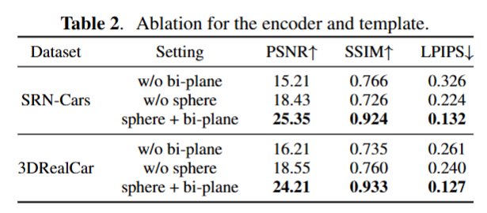
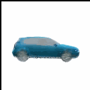
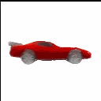

SPAR-GS
Single-view Pose-free Automobile Reconstruction with 3D Gaussian Splatting
Juntao Lyu, Haochen Yu, Hongyuan Liu, Qi Mei, Huimin Ma, Tianyu Hu*
ICASSP 2026
Abstract
We propose SPAR-GS, a pose-free single-image 3D Gaussian Splatting method that learns vehicle prototypes without requiring camera embedding. Specifically, SPAR-GS enhances feature representation through a bi-plane encoder and incorporates a deformation template to directly learn a normalized 3DGS model, thereby enabling novel view synthesis from a single image. Compared with existing baselines, SPAR-GS achieves significant improvements in both visual quality and computational efficiency, enhancing the consistency of objects with limited views in AD simulation.
Method Overview

SPAR-GS implements an end-to-end novel view synthesis framework:
- The input RGB image is normalized to resolution rn and up-sampled by FeatUp
- The extracted features are encoded with a bi-plane (θ-φ and φ-θ).
- The features are divided and decoded into two branches (texture and geometry).
- The template is then deformed and textured accordingly.
- The loss is calculated with the mask and the RGB image of the GT input view.
- Using the camera pose is solely for rendering during training, and not to embed in the network.
Key Ideas
- Pose-free reconstruction without camera embedding
- Bi-plane encoding for shape & texture
- Sphere template for normalized 3DGS prototype learning
Quantitative Results


Qualitative Results


Citation
@INPROCEEDINGS{11464917,
author={Lyu, Juntao and Yu, Haochen and Liu, Hongyuan and Mei, Qi and Ma, Huimin and Hu, Tianyu},
booktitle={ICASSP 2026 - 2026 IEEE International Conference on Acoustics, Speech and Signal Processing (ICASSP)},
title={SPAR-GS: Single-View Pose-Free Automobile Reconstruction with 3D Gaussian Splatting},
year={2026},
doi={10.1109/ICASSP55912.2026.11464917}
}